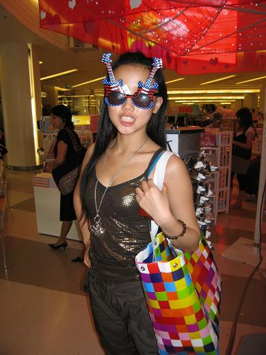
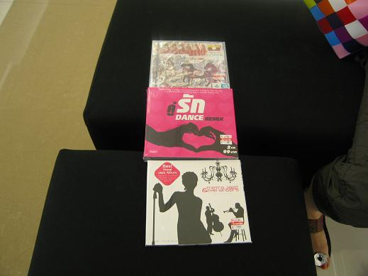
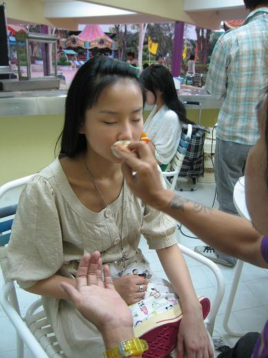
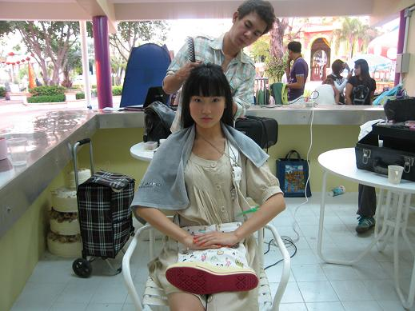
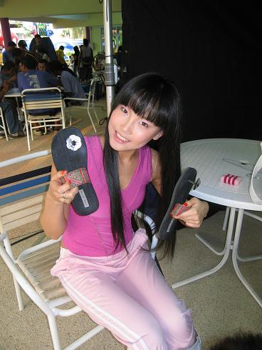
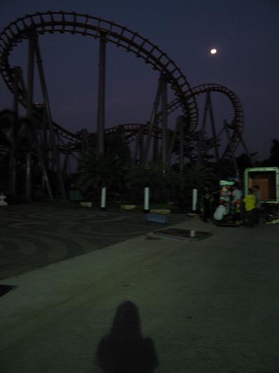

其实早就可以更新，但没想到在去泰国的飞机上不知为何坏了，电脑再也打不开．导致我将近十天用不了电脑，在这方面我真的很白痴，不过现在没事了，谢谢好友相助：）
这次非常荣幸和开心接拍了美年达广告，新年的第一份工作哦，真是＂开门红＂啊！美年达广告大部分都是由一位泰国导演拍的，我猜想这也是原因之一吧，这次拍摄地点也是安排在泰国曼谷，整个拍摄团队，还有一些群众演员全都是泰国人哦．
我很喜欢泰国，之前就很想去，真的要感谢美年达给了这么好的机会呢．自己喜欢的地方，工作起来当然就会更有尽拉，似乎与曼谷很有缘分哦，跟导演和所有的工作人员都相处的非常好，这次广告也容入很多音乐部分，很巧导演也是玩音乐的而且表演很棒哦，有自己的乐队，他是乐队中的鼓手，我们还互相交换了自己的专辑呢，在广告里我有打鼓的部分，他以他幽默的方式教我怎样打鼓更好看更帅，和如何去演绎地更加出彩．还有那些工作人员和群众演员，他们叫我说泰语．．．．当地人招待很周到，工作的时候还有吃丰盛的午餐，还有水果和泰式甜品．．真的好回味哦．．．
其实在曼谷一共呆了五天，不过工作日只是一天，其余时间都是空出来的，所以我当然要抓紧时间抓牢机会出去好好逛一下拉！当地有个很大的超级市场，能淘到许多价廉物美的东西，幸运的是这个市场只有在周末才开，没周就营业两天，居然被我们撞上拉，真的好高心，我们收获很大噢！逛到手酸脚酸，实在背不东了才回家．．．

我们去了传说中亚洲最大的Shopping Mall－－SIAM PARAGON！
里面有家很大的唱片店，这是我搜到的三张泰语ＣＤ，其实我都不知道哪张好听，只挑自己喜欢的封面．．．哈哈 ＳＩＡＭ之后，我们去了一个地方，是这次除了工作之外最重要的一件事情，那就是拜四面佛．听说四面佛非常灵，应该是有求必应吧！每天晚上６到７点拜是最好的．四面佛有四个面，朝着东南西北四个方向，居说每一面的保佑的功能都不一样，我们早早就到了那里，等到这个最好的时辰点燃香，在佛祖前许下了自己的心愿．．．四面佛一定会保佑我们的，我也一定会再回到曼谷去还愿．．．

工作日．．．暂时还没被批准，不能把拍摄时的花絮照传上来．．．
很喜欢自己裸妆的样子或者是不化妆的样子，最简单最真实．．．

好像蜡人哦！

好喜欢这双拖鞋，去年在杭州看到２５０老板都不卖，在曼谷被我淘到拉，比起来能买１０双呢！

很欣赏自己的作品．．哈
